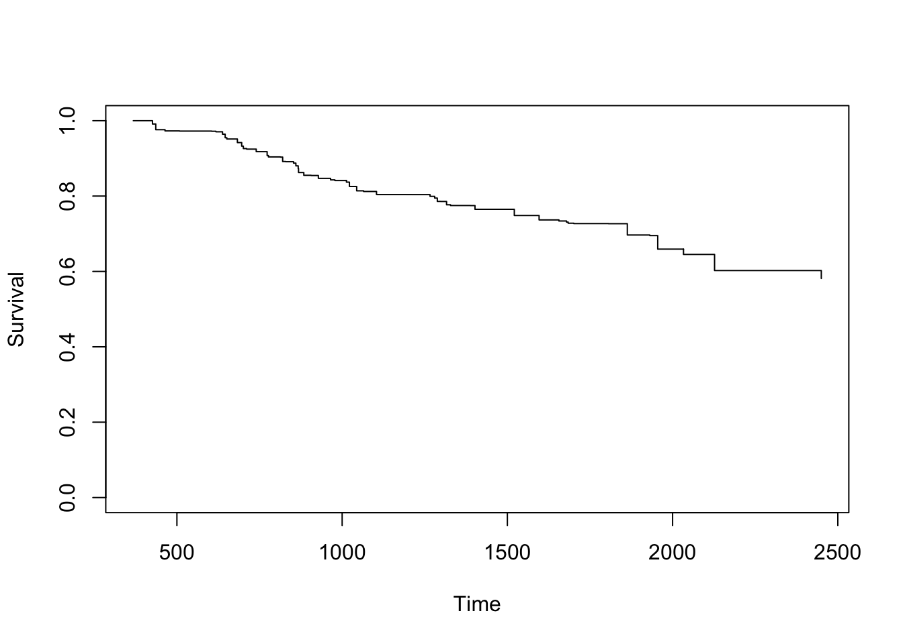

- Preface
- Programing language and software
- Main references and credits
- About the Author
- 1 Introduction
- 2 Kaplan Meier estimator
- 3 The Cox Proportional Hazards Model
- 3.1 The semiparametric model
- 3.2 Estimation
- 3.3 Computing the Hazard Ratio
- 3.4 Hypothesis testing
- 3.5 Adjusting Survival Curves
- 3.6 How to evaluate the PH assumption?
- 3.7 Non-Proportional Hazards… and now what?
- 3.8 Why Cox PH model is so popular? (pros of the model)
- 3.9 Bonus track 1: Additive Cox model
- 3.10 Bonus track 2: Machine Learning for estimating the Cox PM model
- 4 Joint Models for Longitudinal and Time-to-Event Data
- 5 Conditinal Survival with
condSURV - Appendix
- A Installation of
RandRStudio - B Introduction to
RStudio - C Introduction to
R - References
5.4 The condSURV package
To illustrate our methods we will use data from a German Breast cancer study (David W. Hosmer Jr. 2008). This data set is freely available as part of the `condSURV package.
In this dataset, a total of 686 woman with primary node positive Breast cancer were recruited in the period between 1984 and 1989. From this total, 299 developed a recurrence and among these 171 died.
For each patient, the two event times (time to recurrence and time to death) and the corresponding indicator status is recorded. Other covariates were also recorded. The covariate recurrence is the only time-dependent covariate, while the other covariates included are fixed. Recurrence can be considered as an intermediate transient state and modeled using a three-state progressive model with states Alive and disease-free, Alive with Recurrence and Dead. You can see an example at Figure 5.3.
The effect of recurrence is important on the patient outcome and can be studied through the ordered multivariate event time data of time-to-event from enrollment, to recurrence and to death. Results obtained from the estimation of the conditional survival probabilities, \(S(y\mid x)=P(T>y|T_1>x)\), can be used to understand which individuals without recurring cancer after surgery are most likely to survive from their disease and which would benefit from more personal attention, closer follow-up and monitoring.

Figure 5.3: Scheme of the model.
Bellow is an excerpt of the data.frame with one row per individual
head(gbcsCS)
## id diagdateb recdate deathdate age menopause hormone size grade
## 1 1 17-08-1984 15-04-1988 16-11-1990 38 1 1 18 3
## 2 2 25-04-1985 15-03-1989 22-10-1990 52 1 1 20 1
## 3 3 11-10-1984 12-04-1988 06-10-1988 47 1 1 30 2
## 4 4 29-06-1984 24-11-1984 24-11-1984 40 1 1 24 1
## 5 5 03-07-1984 09-08-1989 09-08-1989 64 2 2 19 2
## 6 6 24-07-1984 08-11-1989 08-11-1989 49 2 2 56 1
## nodes prog_recp estrg_recp rectime censrec survtime censdead
## 1 5 141 105 1337 1 2282 0
## 2 1 78 14 1420 1 2006 0
## 3 1 422 89 1279 1 1456 1
## 4 3 25 11 148 0 148 0
## 5 1 19 9 1863 0 1863 0
## 6 3 356 64 1933 0 1933 0
kmw1 <- survCOND(survCS(rectime, censrec, survtime, censdead) ~ 1,
x = 365, y = 1460, data = gbcsCS, method = "KMW", conf = TRUE, n.boot = 100)
summary(kmw1)
##
## P(T>y|T1>365)
##
## y estimate lower 95% CI upper 95% CI
## 1460 0.8050317 0.77625 0.8395263With the previous code you can obtain the estimates for the probability that a woman survives more than four years given that she is alive and disease-free at one year after the surgery. Note that the package contains the function survCS which takes the input data as an R formula and creates a survival object among the chosen variables for analysis. This function will verify if the data has been introduced correctly and create a survCS object. Arguments in this function must be introduced in the following order time1, event1, time2, event2,…, Stime and event, where time1, time2, …, Stime are ordered event times and event1, event2,…, event their corresponding indicator statuses. This function plays a similar role as the Surv function in the survival package.
# including more times
kmw2 <- survCOND(survCS(rectime, censrec, survtime, censdead) ~ 1,
x = 365, y = 365 * 1:7, data = gbcsCS, method = "KMW", conf = TRUE)
summary(kmw2)
##
## P(T>y|T1>365)
##
## y estimate lower 95% CI upper 95% CI
## 365 1.0000000 1.0000000 1.0000000
## 730 0.9429857 0.9215913 0.9604599
## 1095 0.8805697 0.8542154 0.9050319
## 1460 0.8050317 0.7717641 0.8406205
## 1825 0.7506686 0.7052949 0.7905356
## 2190 0.6627422 0.6040739 0.7232711
## 2555 0.6205942 0.5157023 0.7088350
# with y omitted
kmw3 <- survCOND(survCS(rectime, censrec, survtime, censdead) ~ 1,
x = 365, data = gbcsCS, method = "KMW", conf = TRUE)
# note the `times` argument
summary(kmw3, times = c(730, 1095))
## y estimate lower 95% CI upper 95% CI
## 730 0.9429857 0.9216899 0.9620051
## 1095 0.8805697 0.8532885 0.9092549In addition, one may also be interested in calculating the conditional survival function, \(S(y\mid x)=P(T>y|T_1\leq x)\). This is the probability of the individual to be alive at time \(y\) conditional that he/she is alive with recurrence at a previous time \(x\).
# P(T > y | T1 < x)
kmw4 <- survCOND(survCS(rectime, censrec, survtime, censdead) ~ 1,
x = 365, data = gbcsCS, method = "KMW", conf = TRUE, lower.tail = TRUE)
summary(kmw4, times = c(730, 1095))
## y estimate lower 95% CI upper 95% CI
## 730 0.3448798 0.2111348 0.4662095
## 1095 0.2165459 0.1024390 0.3146710Similarly, one can obtain the results for the landmark methods (LDM and PLDM) using the same function survCOND. The unsmoothed landmark estimator is obtained using argument method = "LDM" whereas for obtaining the presmoothed landmark estimator the argument presmooth = TRUE is also required.
plot(kmw3, confcol = "red", xlab = "Time (days)", ylab = "S(y|365)")
One important goal is to obtain estimates for the above estimated quantities (conditional survival probabilities) conditionally on current or past covariate measures. The current version of the package allow the inclusion of a single covariate.
grade <- survCOND(survCS(rectime, censrec, survtime, censdead) ~ as.factor(grade),
x = 365, data = gbcsCS, method = "LDM", conf = FALSE)
plot(grade)
Finally, the package also allow the user to estimate the conditional survival given a continuous covariate (i.e., objects of class ‘integer’ or ‘numeric’). For example, estimates and plot for the conditional survival for women aged 60 years, \(S(y|x,Z=z)=P(T>y|T_1>x, age=60)\).
age <- survCOND(survCS(rectime, censrec, survtime, censdead) ~ age, x = 365,
z.value = 60, data = gbcsCS, conf = FALSE)
plot(age)
The use of the condSURV package to more than two consecutive events is illustrated in the Appendix of Meira-Machado and Sestelo (2016b).
References
David W. Hosmer Jr., Susanne May, Stanley Lemeshow. 2008. Applied Survival Analysis : Regression Modeling of Time-to-Event Data. 2ed. ed. Wiley Series in Probability and Statistics. Wiley-Interscience. http://gen.lib.rus.ec/book/index.php?md5=41b0866e0c2edb9d5bb6e332deb9cbb5.
Meira-Machado, Luis, and Marta Sestelo. 2016b. “condSURV: An R Package for the Estimation of the Conditional Survival Function for Ordered Multivariate Failure Time Data.” The R Journal 8 (2): 460–73. http://journal.r-project.org/archive/2016-2/meiramachado-sestelo.pdf.